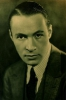
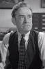
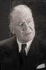

Country:United States, 62 minutes
Spoken languages:
Genres:Mystery, Crime
Director(s):Charles Lamont
Writer(s):Jack Natteford
Video Codec:Unknown
Number: 1730


Certification:NR
Storyline:
The second and final Grand National Pictures film to feature The Shadow, played again by Rod La Rocque. In this version, Lamont Cranston is an amateur detective and host of a radio show with his assistant Phoebe (not Margo) Lane. Cabbie Moe Shrevnitz and Commissioner Weston also appear.
Cast:   


Medium: Original DVD,
Comments: Part of: Mystery Classics - 50 Movie Pack
Loaned: No
Aspect ratio: Unknown